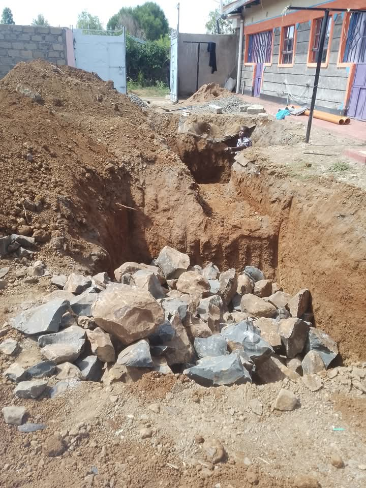
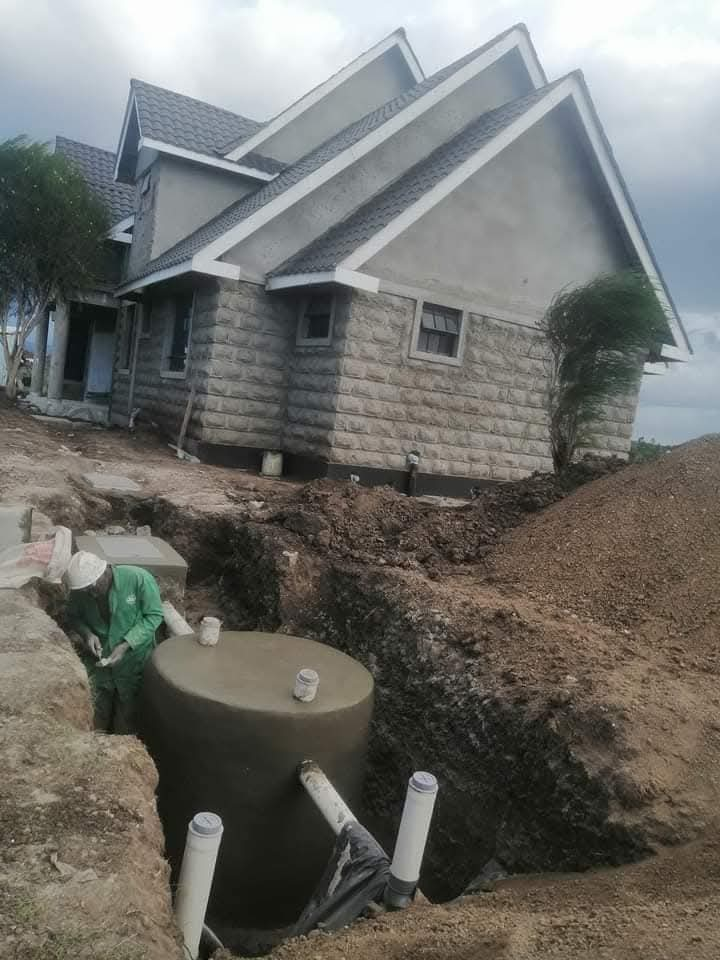
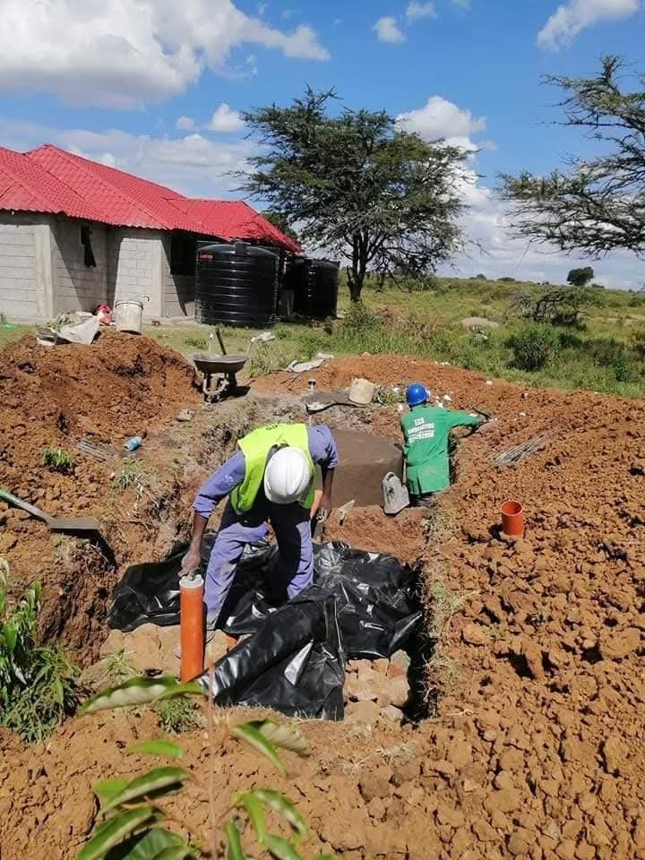
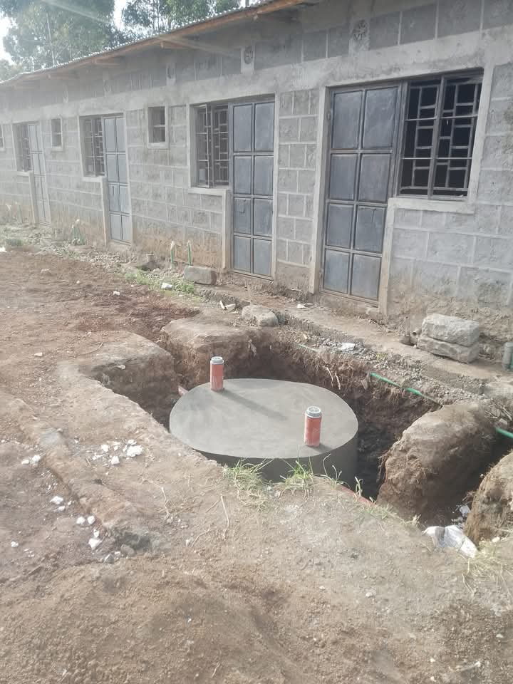
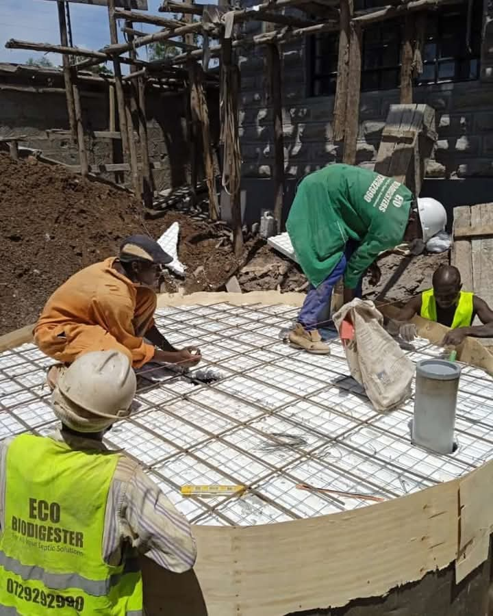

Comprehensive waste management and plumbing solutions tailored for homes, businesses, and institutions across Kenya.

Our eco-friendly biodigester systems use bio-degradation to break down human waste into clean water and harmless gases. No odour, no exhausting — ever. Suitable for residential, commercial, and institutional use on any terrain.

Effective grease trap systems designed to intercept fats, oils, and grease from kitchen wastewater before it enters the drainage or soakage area. Essential for restaurants, hotels, schools, and homes.

Advanced biological treatment for traditional pit latrines. Our solutions eliminate foul odours, reduce waste volume, and extend the life of existing pit latrines without the need for exhausting.

Professional plumbing solutions for residential homes, commercial buildings, and institutions. From new installations to repairs, we ensure smooth water flow and drainage systems.

Convert organic waste into clean, renewable biogas for cooking and heating. Our biogas systems help reduce energy costs while promoting environmental sustainability.
From inquiry to installation — here's how we work with you.
Call us or fill in our form. We'll discuss your needs and answer any questions.
Our team visits your property to assess the terrain, soil type, and best system placement.
We provide a transparent, no-obligation quote tailored to your specific property and needs.
Our experienced team handles the full installation — excavation, system setup, and connections.
We walk you through the finished system and provide ongoing support.
See why hundreds of Kenyans are switching to our biodigester systems.
| Feature | Biodigester | Traditional Septic Tank |
|---|---|---|
| Odour | No odour | Foul smell |
| Exhausting | Never needed | Regular exhausting |
| Durability | 100+ years | 15-25 years |
| Space Required | Minimal | Large area needed |
| Maintenance Cost | Almost zero | High ongoing costs |
| Environmental Impact | Eco-friendly | Pollutes groundwater |
| Terrain Flexibility | All terrains | Limited to specific soils |